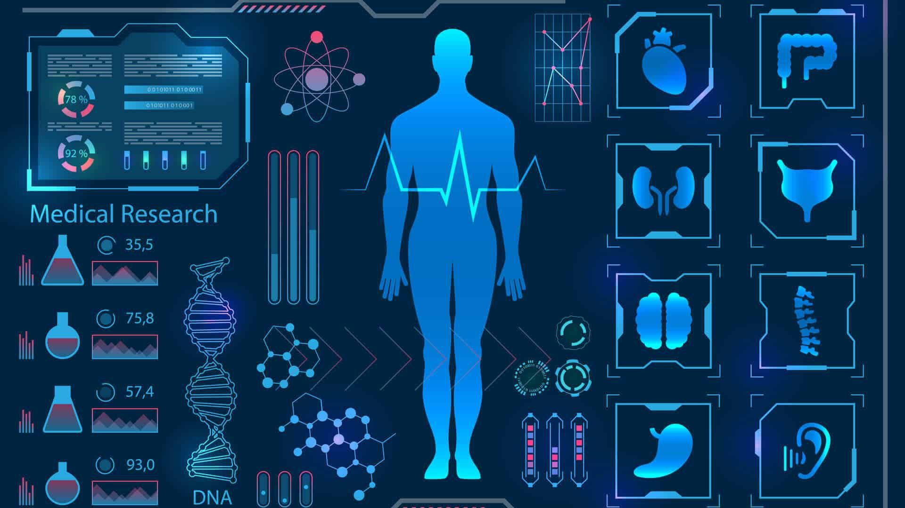

On my portfolio website, you will find a collection of data analyst projects that showcase my expertise in diverse data wrangling, analysis, and visualization techniques. Leveraging my skills in Python, SQL, and Power BI, I have developed these projects to demonstrate my ability to extract valuable insights from raw data. From cleaning and transforming datasets to conducting in-depth analysis, I have employed a range of tools and techniques to uncover meaningful patterns and trends. Each project represents my dedication to delivering accurate and actionable information through compelling visualizations and reports. Feel free to explore my portfolio and witness the power of data analysis in action.

Health Insurance Data Analysis with Python
The analysis focused on understanding the relationships between different variables and their potential impact on health insurance claims and risk assessment.
Data Professional Survey Analysis with Power BI
The Power BI data analyst project focused on analyzing a dataset containing various factors related to individuals' current roles, career transitions, salaries, job satisfaction, and demographics.
IBM Capstone Project with Python and IBM Cognos Analytics
This project is to analyzes data to help identify future skills requirement.
The project starting with Data Collection Process which collect and explore data from various sources, Data Wrangling to determine and normalize values. Then, Explore Data by define distribution, outliers and correlation before taking data visualization finding relationship, composition and comparison. After that, Creating dashboards is the final step of data analysis.
Predictive Modeling of Air Quality Index Using Regression Analysis
The data analyst project aims to explore and analyze the relationship between various meteorological factors and air quality using regression analysis.